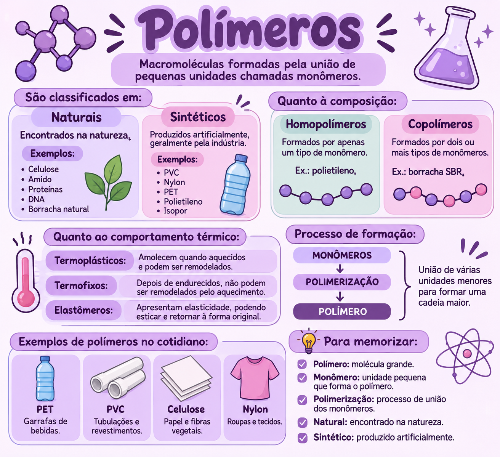
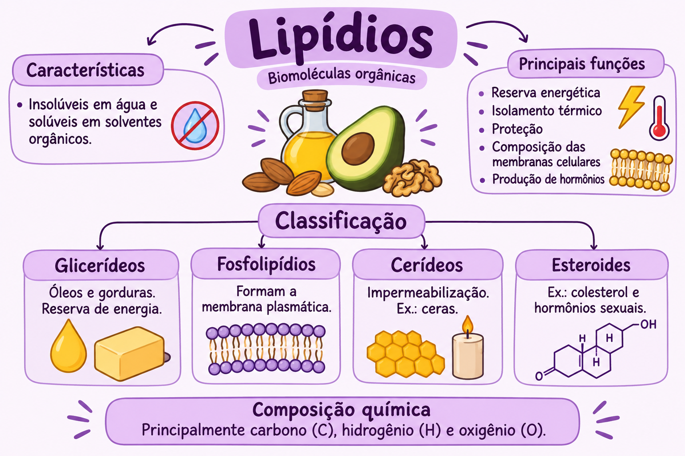
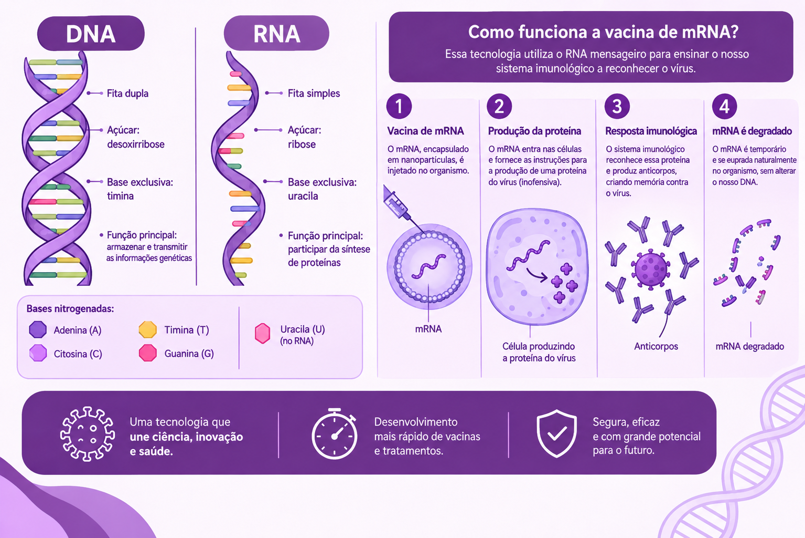

Polímeros
Já ouviu falar em polímeros? Não? 😮 Eles são macromoléculas formadas a partir de unidades moleculares menores. Que tal acessar nosso site e descobrir tudo sobre eles?
Saiba maisMacromoléculas? Deixa que o mestre explica. 🧪
As macromoléculas são compostos orgânicos de grande tamanho,
formados pela ligação de muitas unidades menores, conhecidas
como monômeros.
Elas desempenham um papel fundamental nos seres vivos,
atuando em diversas funções essenciais para a vida.
Existem quatro tipos principais de macromoléculas:
carboidratos, lipídios, proteínas e ácidos nucleicos.
Cada uma delas possui características específicas e
desempenha funções distintas no organismo.
Alguns exemplos incluem o amido, um tipo de carboidrato,
a hemoglobina, uma proteína, e o DNA, um ácido nucleico.

Já ouviu falar em polímeros? Não? 😮 Eles são macromoléculas formadas a partir de unidades moleculares menores. Que tal acessar nosso site e descobrir tudo sobre eles?
Saiba mais
Lipídios são moléculas orgânicas insolúveis em água. Para saber mais, acesse nossa página e descubra tudo sobre eles.
Saiba mais
Extra: os carboidratos são compostos formados principalmente por carbono, hidrogênio e oxigênio. Descubra mais sobre suas classificações e funções!
Saiba mais
As proteínas são formadas por aminoácidos, que se unem por ligações peptídicas. Ficou curioso? Acesse nossa página e saiba mais.
Saiba mais
Você sabia? Os ácidos nucleicos são macromoléculas essenciais para a vida, armazenando e transmitindo informações genéticas. Confira tudo sobre eles!
Saiba mais